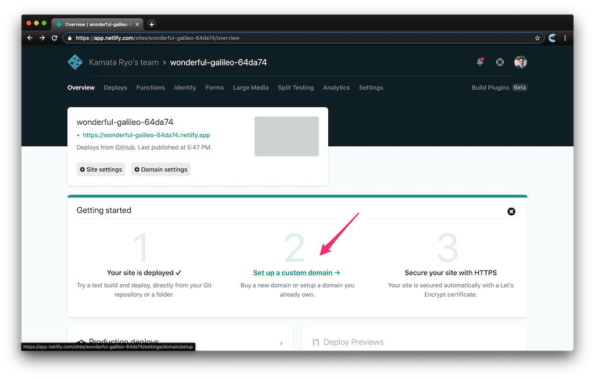
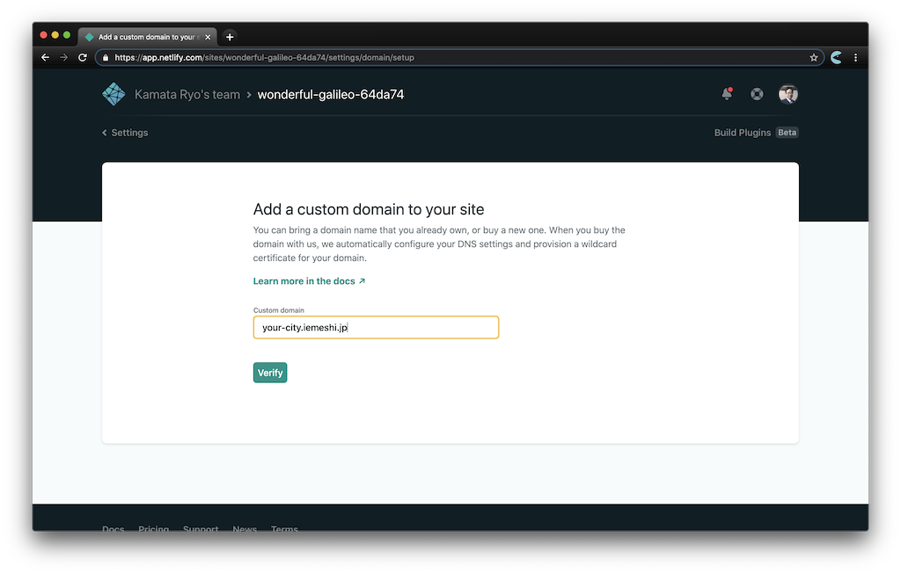
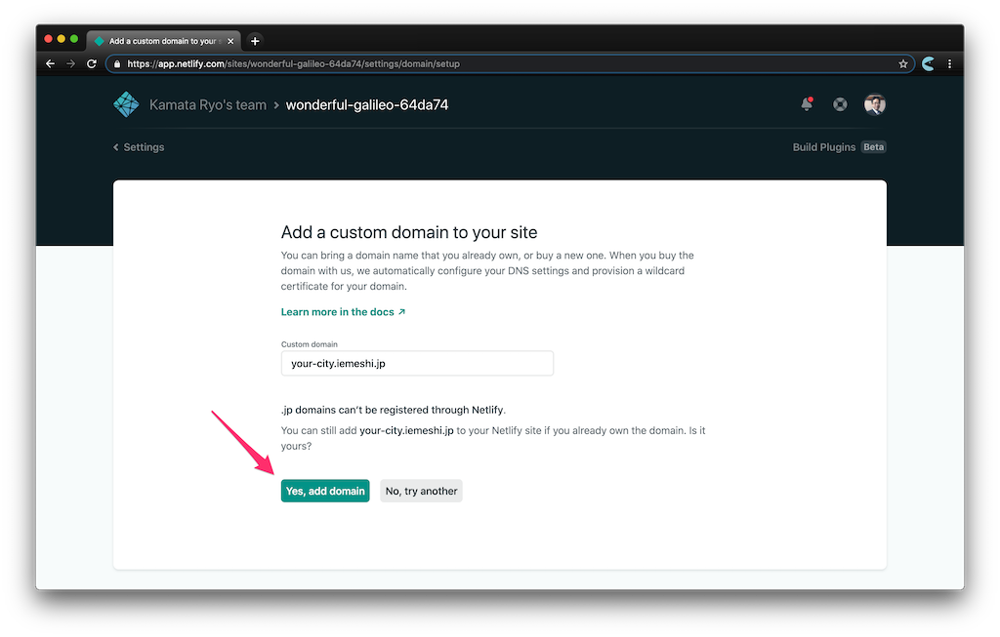

イエメシ
イエメシ
地元のイエメシアプリをつくろう
フォーク
まず、以下のリポジトリをフォークしてください。
https://github.com/iemeshi/app
サイト全体の設定
config.yml を書き換えることでサイト全体の設定を変更できます。
設定の例:
title: 和歌山県串本町
description: 和歌山県串本町内でテイクアウトできるお店
data_url: https://docs.google.com/spreadsheets/d/1zyZQcaK3sREB59gv34aPAvk6NOktLe4P5gM42XmKmAc/export?format=csv&gid=0
repository: https://github.com/iemeshi/kushimoto.iemeshi.jp
form: https://docs.google.com/forms/d/e/1FAIpQLSdjDvfWD5pIuxYiIgVBBwmsfd8-6sgActbeMOm2450dRfZroQ/viewform
title: サイトのタイトルです。多くの場合、対象となる地域であるべきです。description: サイトの概要文です。data_url: アプリで読み込む CSV データまでの URL を記述してください。SSL は必須です。repository: アプリの GitHub リポジトリの URL を記述してください。form_url: データの追加/更新用の申請フォームの URL を記述してください。
form_url について
データの追加/更新のためのフォームは、Google Form 等を使用してご自身でご用意お願いします。
デフォルトの URL は、串本版のフォームになっているのでかならず差し替えてください。
店舗データについて
店舗データは CSV 以下のいずれかの方法で店舗ファイルを作成して、config.yml にその CSV までの URL を設定してください。
CSV の列について
以下の Google スプレッドシートと同じ列の CSV を作ってください。
https://docs.google.com/spreadsheets/d/1zyZQcaK3sREB59gv34aPAvk6NOktLe4P5gM42XmKmAc/edit#gid=0
緯度、経度、店名 のみが必須で、これらのどれか一つでも入力されていないとアプリ上には表示されません。
なお、データは AJAX で常時読み込んでいますので、CSV が編集されるとほぼ同時にアプリ側にも反映されると考えてください。（キャッシュで多少タイムラグがあります。）
Google スプレッドシートを使う方法
上述の Google スプレッドシートをコピーして、データを追加してください。追加後は共有を設定します。「ファイル」->「共有」メニューを開き、左下の「変更」をクリックして「制限付き」を「公開」に変更して「完了」をクリックします。
Google スプレッドシート の URL は通常、以下のようなフォーマットの URL になっています。
https://docs.google.com/spreadsheets/d/<:id>/edit#gid=<:gid>
これを以下のように置き換えることで、CSV フォーマットでアクセスできます。
https://docs.google.com/spreadsheets/d/<:id>/export?format=csv&gid=<:gid>
この URL を、config.yml に記述することで、データを読み込むことができます。
例:
- https://docs.google.com/spreadsheets/d/1zyZQcaK3sREB59gv34aPAvk6NOktLe4P5gM42XmKmAc/edit#gid=0
- https://docs.google.com/spreadsheets/d/1zyZQcaK3sREB59gv34aPAvk6NOktLe4P5gM42XmKmAc/export?format=csv&gid=0
GitHub を使用する方法
GitHub 上の任意のリポジトリに、以下の行で始まる CSV フォーマットのファイルをコミットしてください。
緯度,経度,店名,紹介文,住所,電話番号,営業時間,テイクアウト営業時間,ジャンル,価格帯,支払い方法,Instagram,Twitter,公式サイト
次に、CSV ファイルへの URL を以下のスクリーンショットの要領で取得して、config.yml にペーストしてください。

サンプルリポジトリは以下のとおりです。
https://github.com/iemeshi/sample-csv
アプリの公開について
このアプリは GitHub Pages か Netlify で公開されることを想定しています。
GitHub Pages を使用するには、GitHub Actions や Circle CI でビルドを行う必要がありますので、Netlify が簡単だと思います。
ドメインについて
このアプリでは Geolonia の地図を使用しており、オープンソースプロジェクト向けの共通の API キーが同梱されています。以下のドメイン名でのみ地図を利用できます。
https://*.github.io/https://*.iemeshi.jp/
https://*.iemeshi.jp ドメインについては、無償で提供いたしますので、以下のリポジトリの apps.json にご希望のサブドメインを記述してプルリクエストを送ってください。
https://github.com/iemeshi/registry
Netlify で iemeshi.jp のサブドメインを設定する
イエメシアプリを Netlify で公開する場合の、カスタムドメインの設定方法について解説します。サイトのデプロイが終わったら、ウィザードに従って Set up a custom domain のページに移動して下さい。

ページのフォームに希望のサブドメインを入力してください。例えば your-city というサブドメインを使いたい場合、 your-city.iemeshi.jp と入力します。

.jp domains can't be registered through Netlify. と表示されます。そのまま Yes, add domain のボタンを押してください。

これで設定が完了しました。 Primart domain として your-city.iemeshi.jp が登録されているはずです。
なお、 iemeshi/registry へのプルリクエストがまだマージされていない場合、Check DNS Configuration と表示されます。

カスタムドメインの設定が完了すると自動的に HTTPS が利用できるようになります。この際反映までに少し時間がかかる場合がありますので、少し待ってからダッシュボードをリロードしてみて下さい。

注意
イエメシ以外の他のアプリをこのドメインで配信しないようにお願いします。その場合、予告なしに DNS サーバーの設定を削除することがありますのであらかじめご了承ください。